AI Calculator · board v14 · Casio fx-115ES shell
Calculator Assembly Guide
How to turn a tested v14 board, a ground fx-115ES shell and the bought parts into a finished calculator. Build one calculator at a time, in order. Tick each box as you go. Ticks are saved in this browser only, separately for calculator 1 and calculator 2.
Every step has the same parts: time and what you'll need, pictures, numbered sub-steps (tick each), why notes (what goes wrong if you skip it), a check before moving on box and the common mistakes. Every picture opens full size when you tap it. Labels: suggestion = my idea, the project docs say nothing. unsure = not checked on real parts, or the docs disagree. Times are rough, for a first build; the second calculator goes about twice as fast.
- No power while you plug a ribbon. Never plug or unplug a ribbon (e-paper or camera) while the board has any power. Once the battery is in J4, the board is always powered. So both ribbons go in before the battery.
- Glue the magnet piece last. Only after its meter check has passed.
- Never grind, file or force a post. If the board sticks on post H6, file the board's hole a little towards the top of the board.
- Keep TP1, TP4 and TP7 clear. No tape, foam or glue on these three test pads. They are your only way to rescue a board that won't take firmware.
- Never burn eFuses, and never turn on secure boot or flash encryption.
| Step | What | Time (first build) |
|---|---|---|
| 1 | Take the Casio apart | 20 min |
| 2 | Grind the shell (grinding guide) | 1–2 h + drying |
| 3 | Test the bare board (power-up guide) | 2–4 h |
| 4 | Prepare the parts | 30–40 min |
| 5 | E-paper on + window mask | 40 min |
| 6 | Camera on | 15 min (+20 if drilling) |
| 7 | Magnet piece into J3 | 10 min |
| 8 | Key mat, board in, key test, glue | 45 min + glue set |
| 9 | Battery | 20 min |
| 10 | Close up | 10–15 min |
| 11 | Final test + QA | 40 min + next-day check |
··Parts and tools at a glance
Lay everything out on a clean, light-coloured cloth before you start, so small parts don't get lost and you can see dust. One calculator's parts:

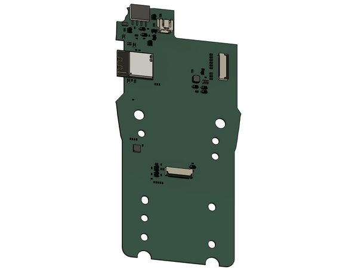

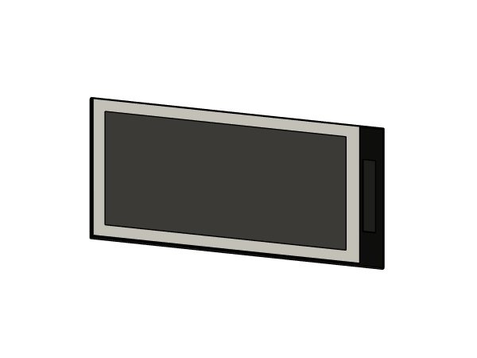

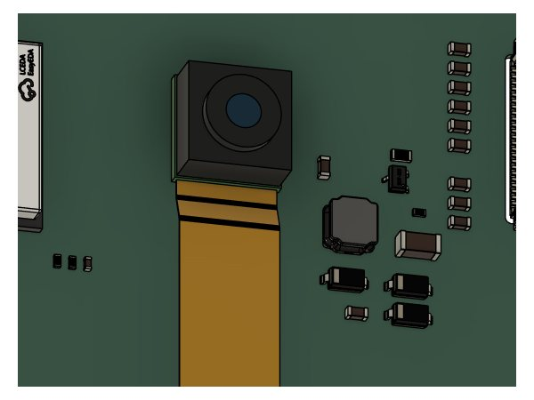

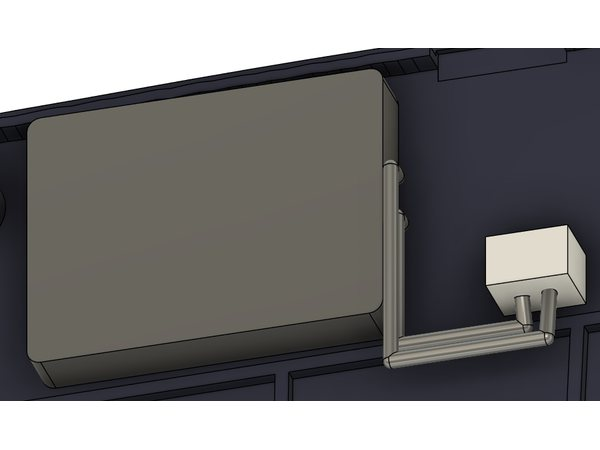

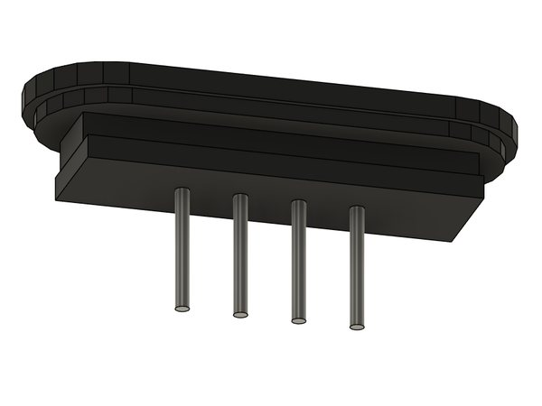

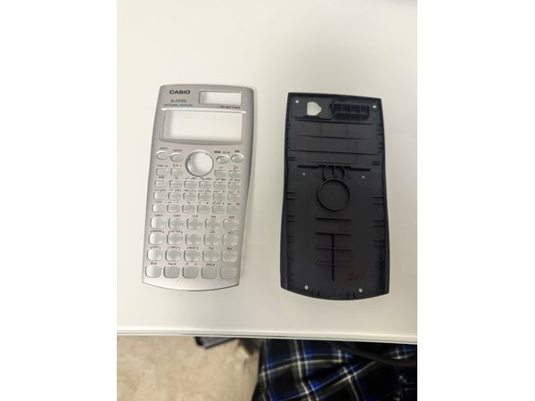

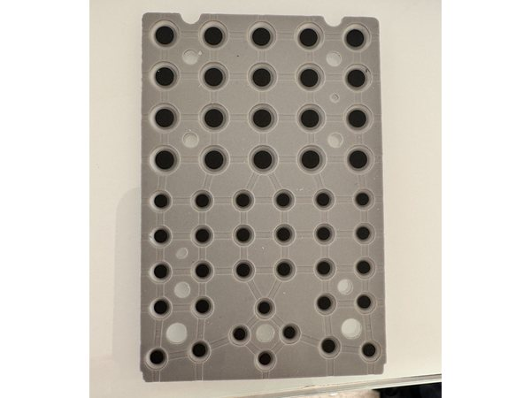
Tools
Also: a 2.4 GHz phone hotspot, the grinding kit from the Shell Grinding Guide, a small cup for screws, a clean bag for the key mat, a pen and a marker.
··Words you'll meet
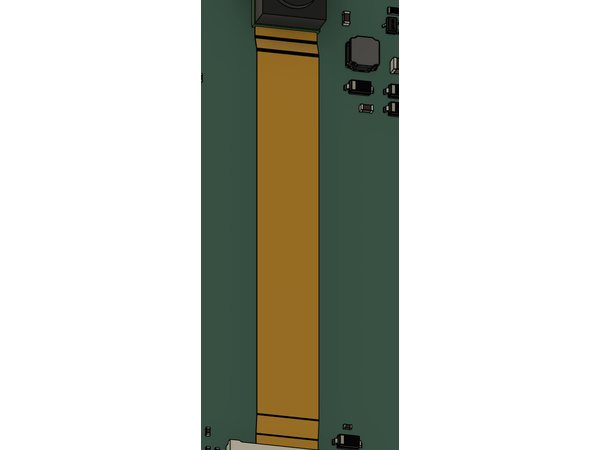
Ribbon (FPC)The thin, flat, flexible cable on the e-paper panel and on the camera. FPC = "flexible printed circuit". Bend it gently in a curve; never crease it sharp, never pull it at its root.
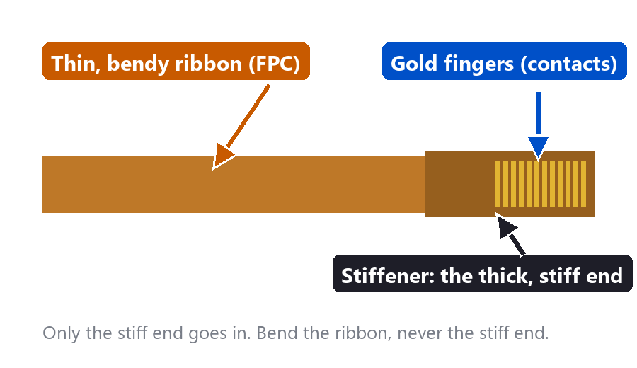
Stiffener and gold fingersThe ribbon's last few mm are thicker and stiff (the stiffener) and carry the gold contacts ("fingers"). Only this stiff end goes into a socket.
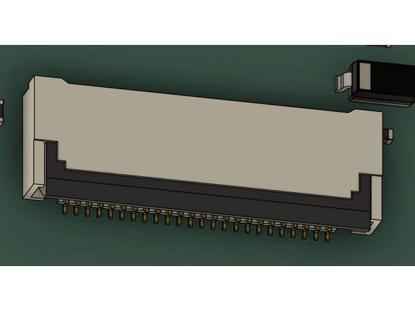
Socket latch (lid)The dark hinged bar on a ribbon socket (J1, J2). Flip it up to open, slide the ribbon in, press it flat to lock. On these sockets the bar is on the side away from the opening. A ribbon never goes in or out while it's closed.
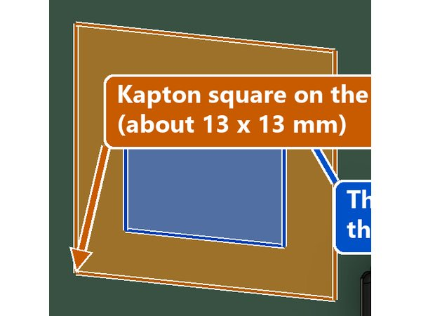
KaptonThin (about 0.06 mm), orange, heat-proof tape that doesn't conduct electricity. It goes between parts so nothing bare touches.
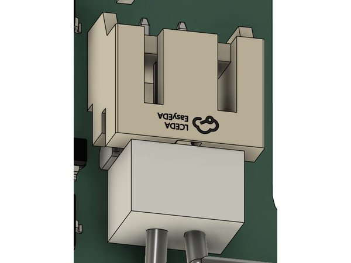
JST-PH plug (J4)The small white 2-pin plug on the battery and its socket J4. It only fits one way round, but the battery maker decides which wire is +, so you always meter it first.
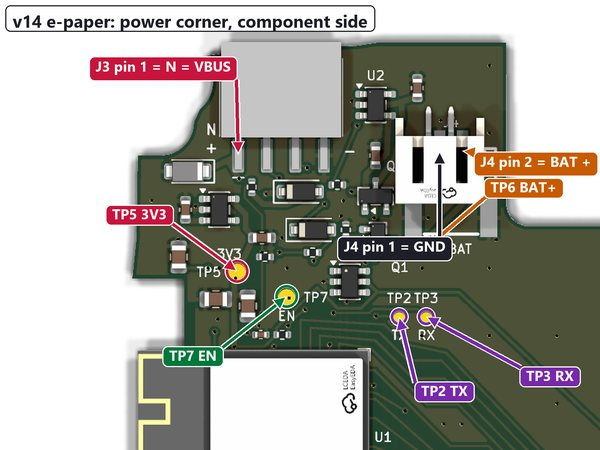
Test pad (TP)A small round bare copper spot, labelled TP1, TP2… You touch a meter probe to it. TP1 = BOOT, TP4 = GND (0 V), TP7 = EN (reset).
- J1, J2, J3, J4
- Names printed on the board for its connectors. J1 = camera ribbon. J2 = e-paper ribbon. J3 = magnetic charging piece. J4 = battery plug.
- Pin 1
- The end of a connector marked with a small triangle, dot, "1" or "N". Every connector here has a pin-1 end that must meet the part's pin 1.
- Polarity
- Which wire is + and which is −. Battery and charging power only work one way round. Backwards can damage parts.
- VBUS / GND
- VBUS is the +5 V wire from a USB cable. GND is ground, the 0 V wire.
- Meter "beep"
- The continuity setting on your multimeter. It beeps when the two probes are joined by metal. Only on an unpowered board.
- Key side / component side
- The board's two faces. Key side: flat, with the key pads, facing the keys and the screen. Component side: all the parts, facing the back cover.
- Rim / parting line
- The edge where the front shell and the back cover meet.
00Overview: what goes where
The new board sits in the front shell exactly where Casio's board was. Its key side faces the rubber key mat. The e-paper screen is taped to the key side, behind the display window. Its ribbon goes through a slot in the board to J2 on the other side. The camera, the battery and the magnetic charging piece are all on the component side, facing the back cover.


The order of work
- 1Take the Casio apart
- 2Grind the shell
- 3Test the bare board
- 4Prepare parts
- 5E-paper on
- 6Camera on
- 7Magnet piece into J3
- 8Mat, board into shell, glue magnet
- 9Battery into J4
- 10Close
- 11Final test + QA
Battery is lastThe board goes into the shell (step 8) before the battery (step 9). The battery lies beside the board on the back-cover floor and plugs into J4, so it can only go in once the board is seated. It must be the last thing connected.
Parts for one calculator
01Take the Casio apart
You keep the outside and throw out the insides. Keep: front shell, back cover, rubber key mat, key caps, display window, battery lid, rubber feet, all 6 screws. Remove: the Casio board, the LCD screen module, the LR44 coin cell. The docs don't describe how this Casio comes apart, so these steps are general practice suggestion.


the coin cell comes out first because a cut wire touching the wrong spot can short it. Labelling the halves matters because the two shells are not quite identical: mixing them gives a cover that rocks.
- 6 screws in the cup, length written down.
- Key mat in its bag, no fingerprints on the black dots.
- No wire stubs left on the posts or in the clips.
- Prying the cover open with a screwdriver: it marks the rim and can crack a clip. A missed screw is almost always the reason.
- Turning the shell over with loose key caps in it: they fall out and get mixed up.
- Pulling the LCD flex instead of unclipping the LCD.
only the empty shell halves, the key mat, the key caps, the small parts and 6 screws are left, labelled 1 or 2.
02Grind the shell
Follow the Shell Grinding Guide step by step. It has the tools, safety rules, before/after pictures and the depth to check for each zone. In short:


| Zone | Part | What | Why |
|---|---|---|---|
| 1 | Back cover | Solar box flat to the floor, no stub | J4 is only 0.41 mm from the floor after this |
| 2 | Back cover | Rib B flat for 14 mm over the camera | The camera lens would hit it by 0.5 mm |
| 3 | Back cover | Camera window: 7 mm drill (small pilot hole first), on the centre line, 38.0 mm down from the back cover's own top outer edge | The camera's view. See the note below |
| 4 | Front shell | LR44 cup: don't grind | Not needed with the battery on the back floor |
| 5 | Front shell | U-notch in the top wall: 21.5 mm wide, 7.95 mm down from the rim, 6.4–27.9 mm from the right edge (display up) | The magnet face sits flush in it |
| 5b | Back cover | Lip under the magnet notch, 21.5 mm wide, only if your cover has a lip there | The magnet body would hit it by 0.5 mm |
| 6, 6b, 6c | Front shell | 6b: snip the pins and hooks off the inner side-wall ribs. 6: file 35 mm of the inner rib (solar-window side, 15–50 mm from the top edge) only if the paper template (with its yellow antenna tab) won't drop in. 6c: rib ends, only if needed | The board's top corner and the ESP32 antenna tab would hit that rib if it reaches the board plane |

hardware/verification/07_final_review_fitment.md lists the few shell dimensions the 3D model only guessed. Measure them on your shell before the first cut: the depth of the inner side-wall rib (decides zone 6), the flat strip between the solar window and the display window (must be at least 2.6 mm: the e-paper panel's top edge lies there), the floor thickness at the moulded label on the back (the camera hole and rib B are inside it), whether the back cover has a lip at the magnet notch (zone 5b), and the screw length. Write the numbers on the template.
Measure the camera ribbon from the module's far edge to its tip (bring-up step 5). 70.3 mm or more: drill at the normal spot (centre of rib B) now. Shorter: wait. In step 6 the camera moves up to 1.7 mm towards J1, and you drill where the lens really ends up.


every zone is there because a part would otherwise hit plastic: J4 by 4.6 mm without zone 1, the lens by 0.5 mm without zone 2, the magnet face by 1.0 mm without zone 5. Too much grinding is worse than too little: a hole in the 1 mm floor can't be undone.
- Fingernail across each ground spot: no ridge, no stub (zone 1 especially).
- Hold the cover to a light: no thin, glowing spots in the floor.
- The camera hole is round, 7.0–7.1 mm both ways, on the centre line.
- Leaving a 0.5 mm stub in zone 1: the cover won't close over J4.
- Measuring the camera hole from the calculator's top end (38.3) instead of the loose cover's edge (38.0).
- Grinding the locating posts "to make the board fit". Never: file hole H6 instead (step 8).
- Fitting electronics into a still-damp shell.
all planned zones are ground, nothing else is touched, and the shell is clean and dry.
03Test the bare board first
Before anything goes into a shell, the bare board must pass the First Power-Up Guide: inspection, meter checks, first power on USB, flashing the firmware, the self-test, then screen, camera and battery one at a time. This guide doesn't repeat it.

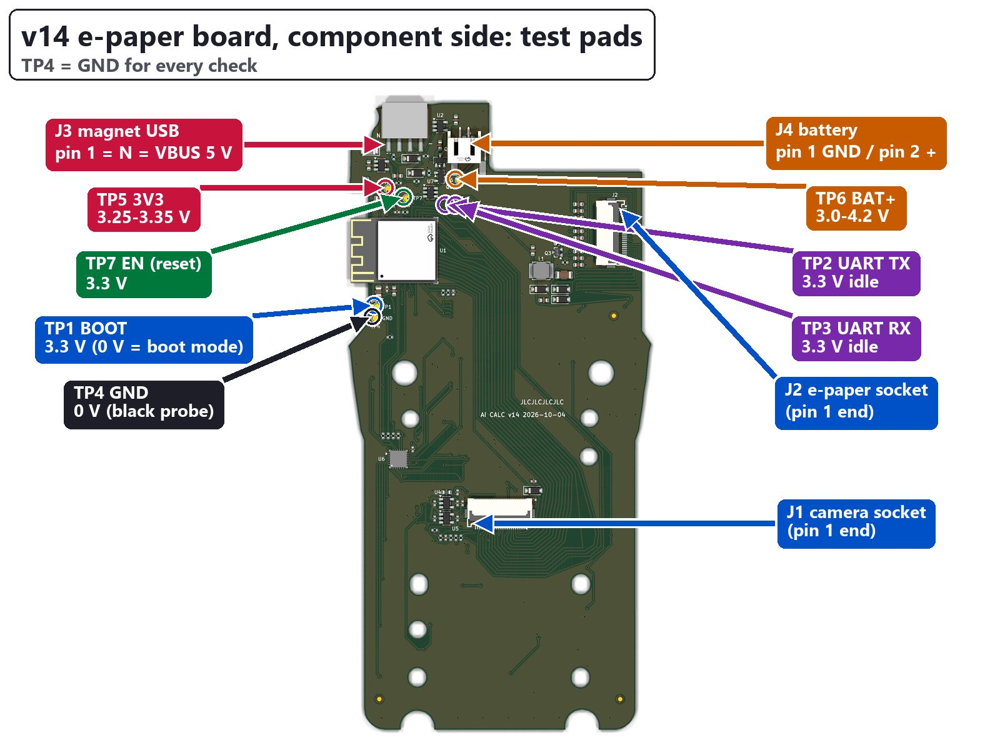
If your e-paper panel is still on the Waveshare HAT
The HAT is the blue test board from the prototype. The bare panel's ribbon is held in the HAT's socket by a latch. Free it before the power-up guide connects it to J2.

- Power good: TP5 reads 3.25–3.35 V, TP7 high, nothing warm.
- Firmware flashed;
statusworks in the Serial Monitor. - Self-test with screen and camera connected:
display_ok,camera_ok,keypad_scanner_ok,wifi_okall true. The 50-key test waits until the key mat is on (step 8). - Battery charging seen in
status("(charging)"). - AI settings in (power-up guide step 10):
statusshows your hotspot, the proxy address and a device token;accountshows the calculator linked. - Written down: the camera ribbon length (power-up step 5) and the magnet piece's VBUS leg (power-up step 3).
once the board is inside a glued shell, finding a bad solder joint means taking everything apart again. Ten minutes of testing on the bench saves an evening.
- Nothing is plugged into J4 and the cable is off: ribbons may now be handled.
- If the ribbons are still in J1/J2 from testing and the latches are closed, you can leave them in.
- Unplugging a ribbon with the battery still in J4.
- Skipping the magnet meter check because "it worked on the computer": a phone charger is the dangerous case.
the board passed every check above and is now unpowered.
04Prepare the parts
Most of these checks are in the power-up guide (its steps 3–5). If you did them there, just tick them here. Do them on the real parts of each calculator.


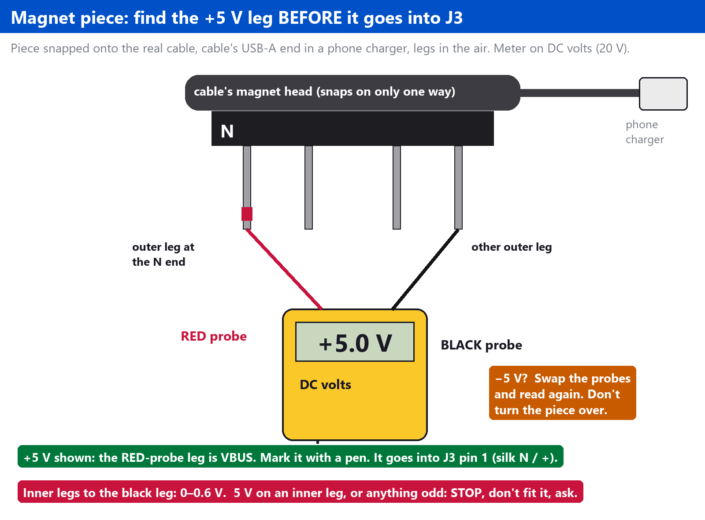
if the piece goes in backwards, the cable's 5 V lands on the board's ground. A computer port cuts out, but a phone charger can push 2 A or more through D7 and the charger chip and burn them. The meter is the only way to know which leg is which on your piece and cable.
Never "turn it over"If the +5 V leg is not at the N end, or the reading is odd, stop and ask. Don't fix it by flipping or reversing the piece: the cable only snaps on one way, so a turned piece lines up the wrong pins with the cable, and the face would no longer sit flush in the notch.

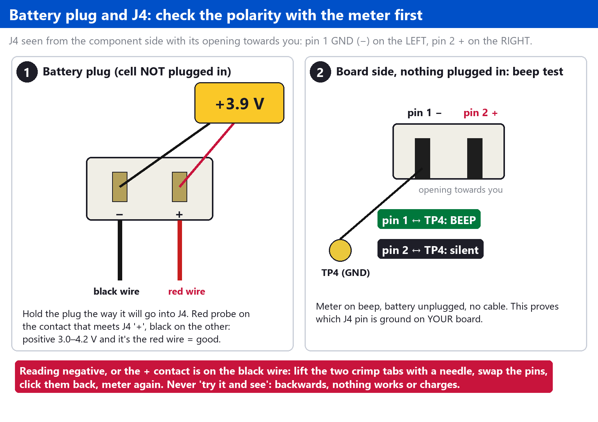

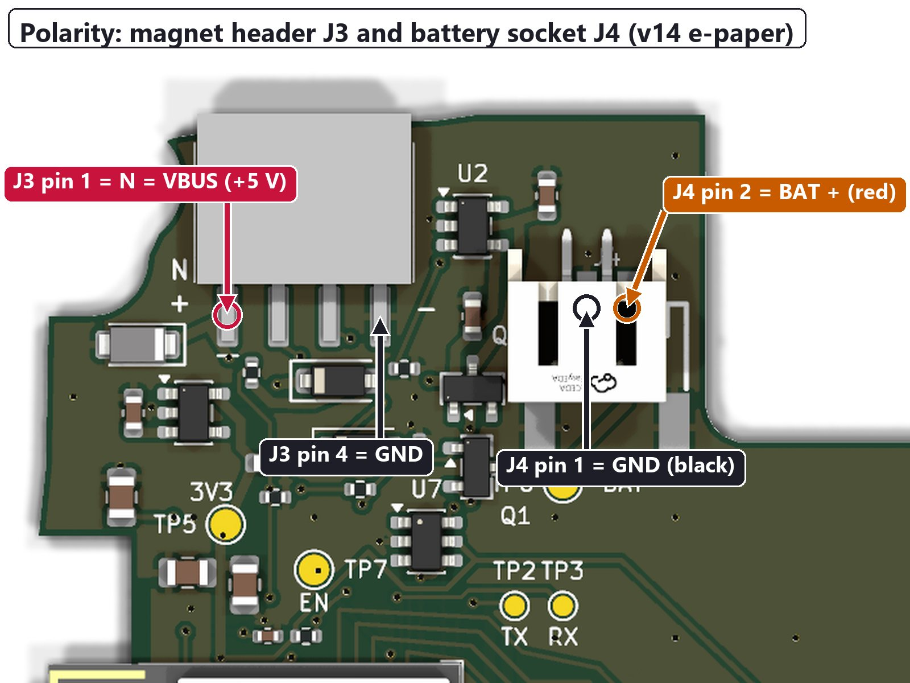
the #1317 ships with its lead taped on top: that makes it 4.9 mm tall and it would hit the coin-cell holder. The wires snap at the solder joints if they bend there, so the Kapton takes the pull instead.
Camera
Kapton

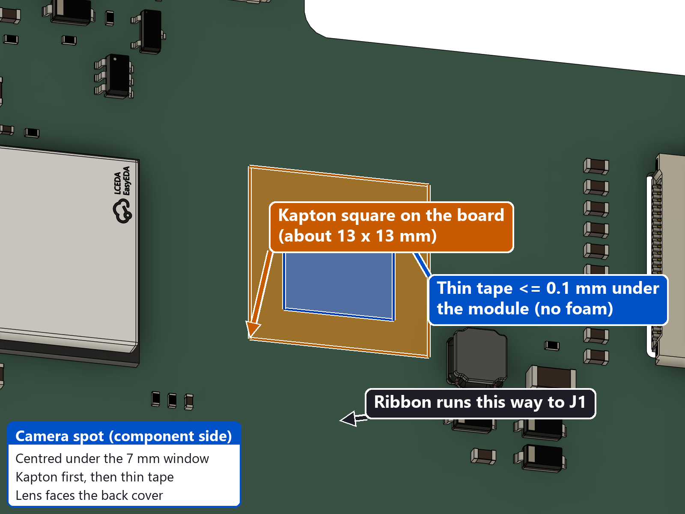
- VBUS leg marked; you know which J3 pin it goes in (pin 1, N).
- Battery reads positive on the contact that meets J4 "+".
- Camera ribbon length written down.
- Kapton flat, no wrinkles, test pads bare.
- Doing the magnet check on a computer port only (a charger is what can do damage, and the check must use the cable you'll really use).
- Bending the battery wires at the protection board while peeling the tape.
- Kapton over a test pad.
the magnet leg is marked and straight, the battery is checked and its lead re-taped to the end face, the camera ribbon is measured, and the Kapton is on.
05E-paper screen onto the board
- E-paper panel, double-sided tape about 0.15 mm thick, scissors.
- A fingernail or plastic pick (for J2's latch), clean dry hands.
- The front shell (for a dry fit).
- For the mask: the template, matte black sticker paper, steel ruler, new craft-knife blade, isopropyl alcohol.
The panel lies on the board's key side, screen facing out through the window. Its ribbon leaves the panel's short end, folds back under the panel, runs about 6.6 mm to a 1.0 × 14 mm slot, goes through the board and turns straight into J2 on the component side.

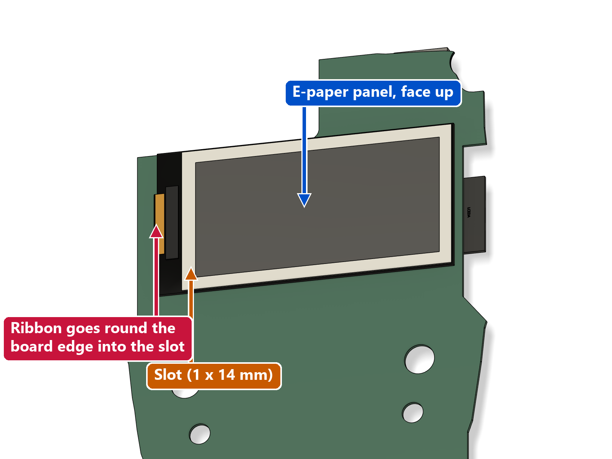

It is 14.3 mm long (Waveshare drawing, ±0.3). The 3D model's path from the glass edge into J2 needs 12.7 mm with the tip 2 mm inside J2, so the nominal spare is about 1.6 mm; with a 3 mm insertion and a short ribbon it is nearer 0.3 mm. Settled (review 07): treat it as no spare: the fold hugs the panel end, the ribbon hugs the slot's outer wall, and it goes fully into J2. If you measured the stiff end longer than 5 mm before ordering, follow what Claude told you then.

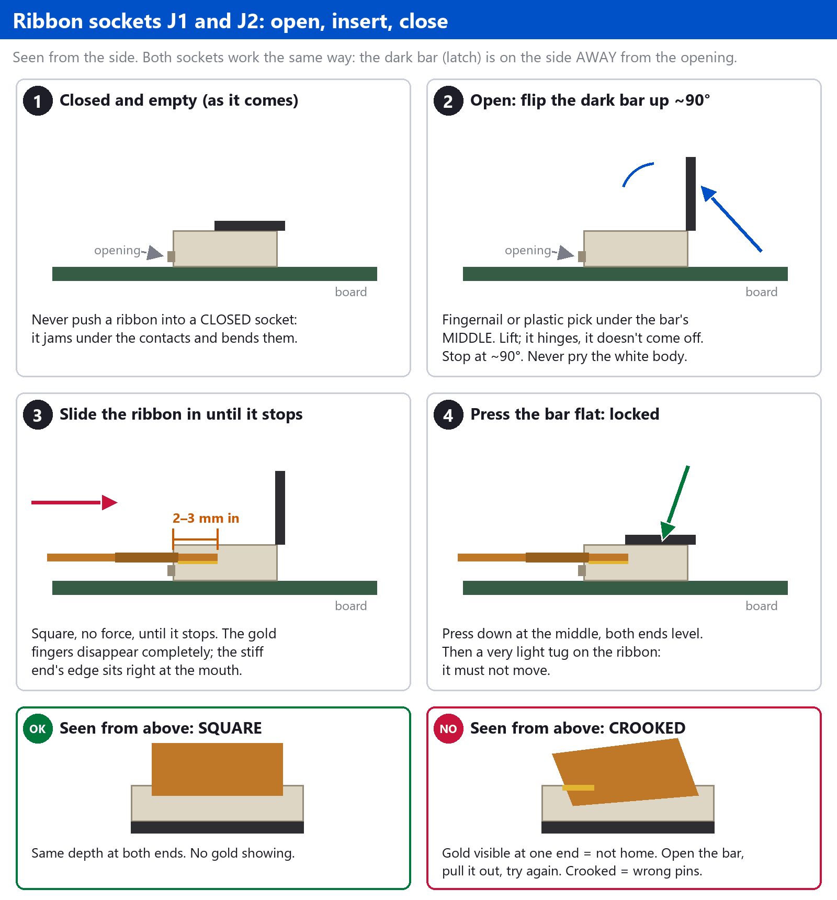

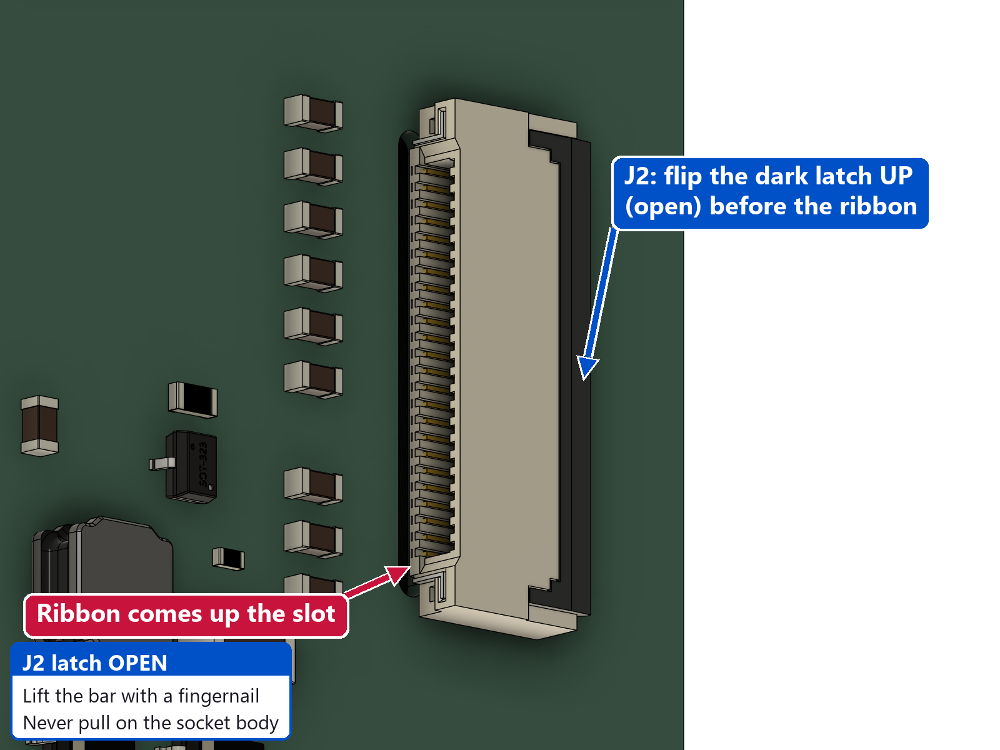

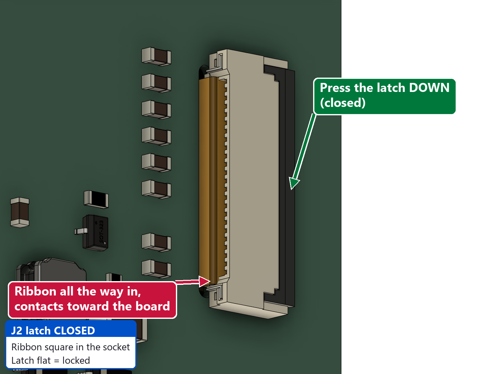
Which way the ribbon faces
Don't think about it, just don't twist it. Fold the ribbon back under the panel and feed it straight down the slot: when it comes up beside J2, its gold fingers face the board (down), which is right for J2. J2 makes contact on both faces, but a ribbon that is turned over or twisted puts pin 1 at the wrong end, and the screen stays blank.
How far it goes in
Until it stops by itself, about 2–3 mm. All the gold disappears into the mouth, and the edge of the stiff end lines up with the mouth, the same depth at both corners. If gold shows at one corner, it is crooked: open, pull out, try again. Never push with the latch closed.
a ribbon that is only half in still works on the bench, then loses one line when the board goes into the shell. A crooked ribbon shifts every pin by one. Pushing into a closed socket bends its contacts for good.
Fit the panel
Tape the panel square

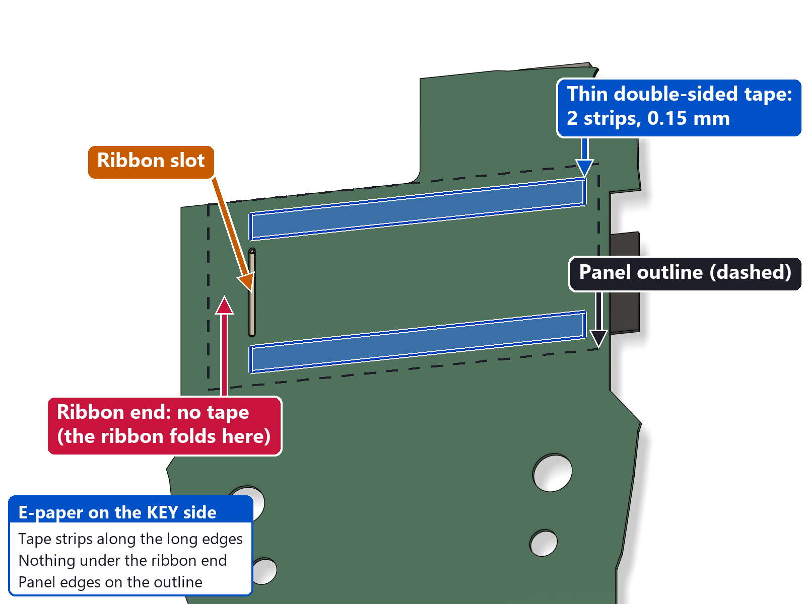

foam or thick tape lifts the panel into the window (it has only 1.79 mm to the mask) and leaves no room for the fold. Pressing the glass can crack the panel.
Through the clear window you would see the ribbon's root at the left end and the glass edges. A thin matte-black sticker on the inside of the window lens hides everything except the picture. It sits 1.79 mm above the screen, so it never touches it.


hardware/enclosure/final_assembly/), matte black sticker paper or black vinyl (0.08–0.15 mm), a steel ruler, a new craft-knife blade, isopropyl alcohol.
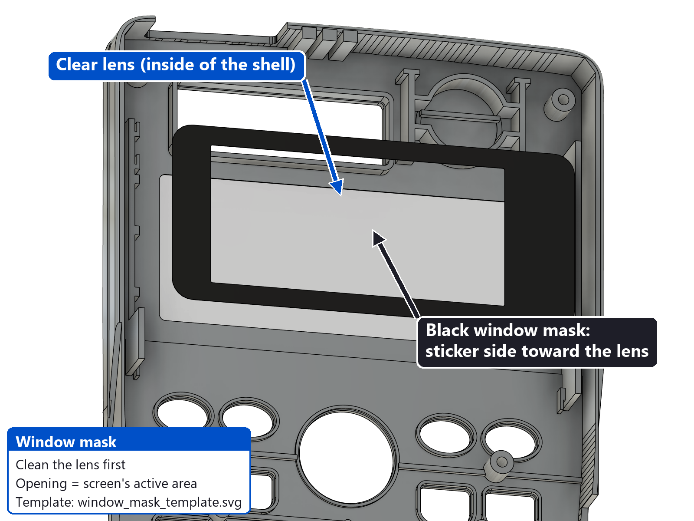

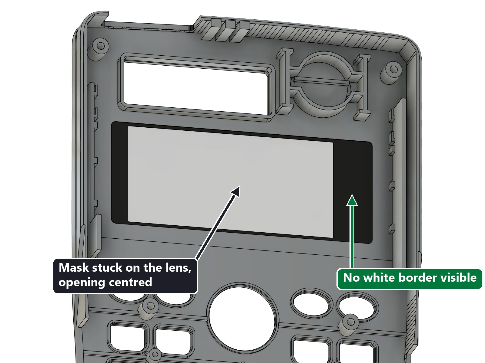
the wide band covers the ribbon's root; stuck the other way round, the ribbon shows on one side and the picture is cut off on the other.
- J2's bar is flat and the ribbon doesn't move on a light tug.
- No sharp crease in the fold; the fold isn't pinched under tape.
- Dry fit: screen centred and square in the window.
- Mask: wide band on the ribbon side, no bubbles, no white border.
- Tape under the ribbon end: the fold has no room and pulls out of J2.
- Ribbon twisted on the way through the slot: blank screen.
- Holding the board by the panel while turning it over: the ribbon tears at its root.
- Mask stuck the wrong way round, or a fingerprint under it.
the panel is taped flat, centred in the window on the dry fit, its ribbon is locked in J2 with no sharp crease, and from the front you see only the picture inside the black mask.
06Camera onto the board
The camera sits on the component side, on its Kapton square, lens pointing at the back cover, centred under the 7 mm hole (on the case's centre line). Its ribbon lies flat and runs straight down the board to J1, with no twist and no loop.

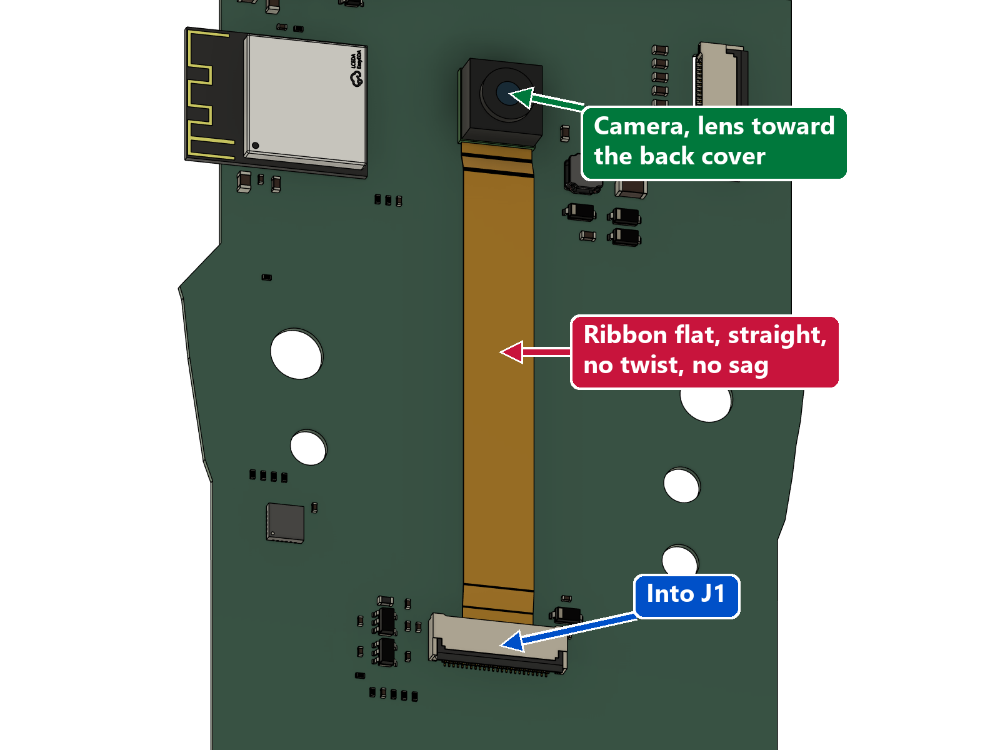


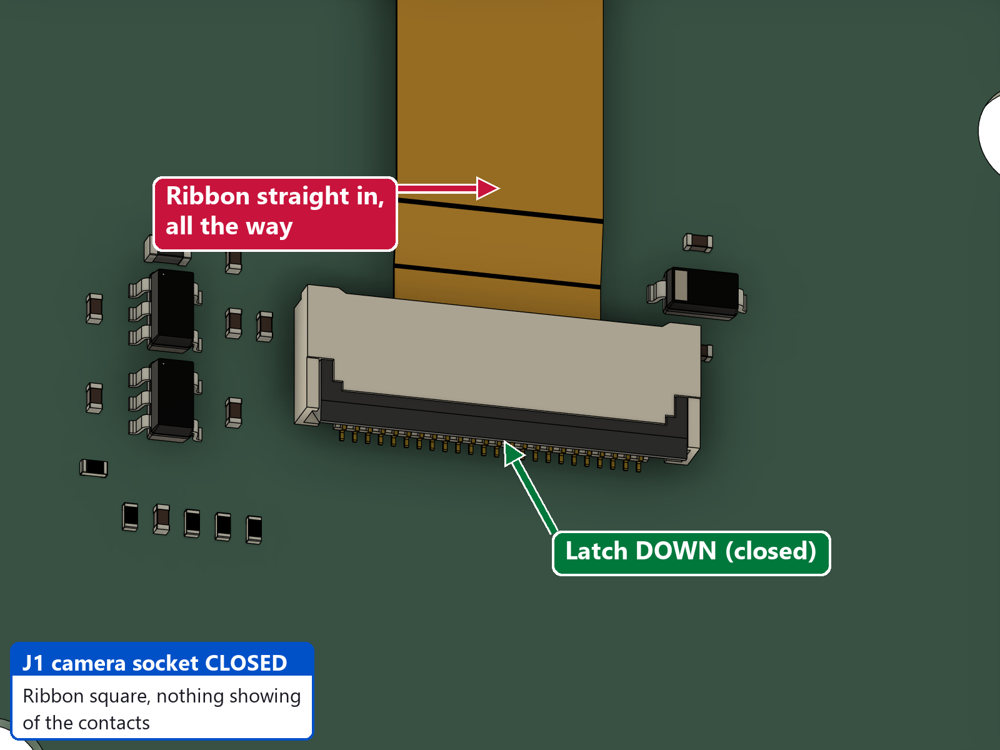
Which way it faces: exactly as it comes off the camera lying lens-up, laid flat down the board. No twist, no flip: the board was designed for that (its contacts then face the board from the render, not seen on the real ribbon). How far: until it stops, about 2 mm, square, no gold showing.

the camera has only 0.71 mm to the edge of the hole and 0.5 mm to the cover: thick tape, a tilt or an off-centre camera shows up as a dark corner or a cover that won't close. A loop in the ribbon gets pinched by the mid rib.
If the camera fails laterJ1's pin order is about 90 % sure. If camera_ok is false after reseating once, the known fix is a 180° twist along the ribbon's length (J1 makes contact on both faces). The power-up test should already have settled this.
- Lens centred in the hole, even ring all round.
- J1 bar flat, ribbon doesn't move.
- Ribbon lies flat along the board, no twist, no standing loop.
- Foam tape under the camera.
- Touching the lens glass (fingerprint = blurry pictures). Hold the module by its sides with tweezers.
- Flipping the ribbon to "make it reach": it never needs that.
the camera is stuck down under the hole, the lens shows in the middle of the hole, and the ribbon is flat and locked in J1.
07Magnet piece into J3
J3 is a sideways socket at the board's top edge, its holes facing the top wall. The magnet piece's legs push into it. Later its face is glued flush in the U-notch. The glue takes the cable's pull, never the legs.


Why polarity matters hereBackwards, the cable's 5 V lands on the board's GND. A phone charger can then push 2 A or more through D7 and the charger chip. Never test that on purpose. If the beep test says the pin-1 leg is GND: pull the piece out and ask. Never turn it over.
- Pen mark at pin 1 (N end).
- Pin-4 leg beeps to TP4; pin-1 leg silent.
- Body square, not leaning.
- Pushing with one leg outside its hole: it folds under the body.
- Gluing now. Glue only after the key test in step 8.
the marked leg is in pin 1, the pin-4 leg beeps to TP4, and the piece sits square on the board edge.
08Key mat and board into the front shell
Key mat

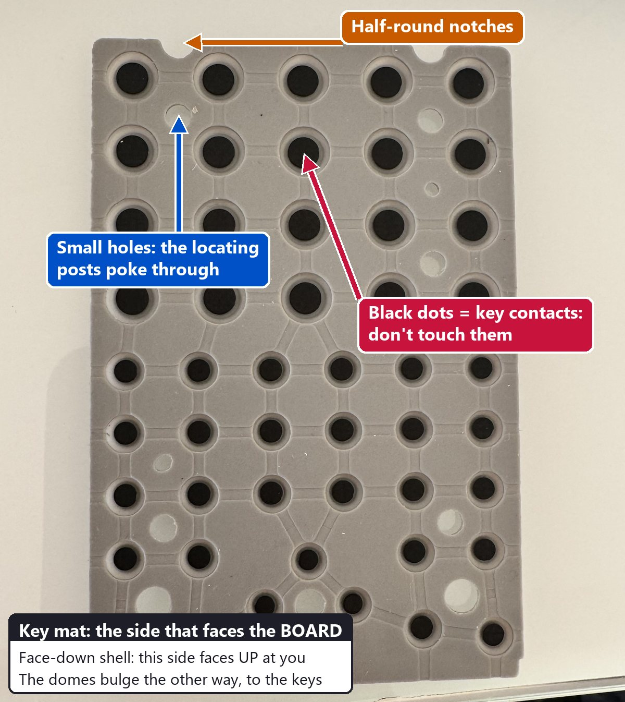


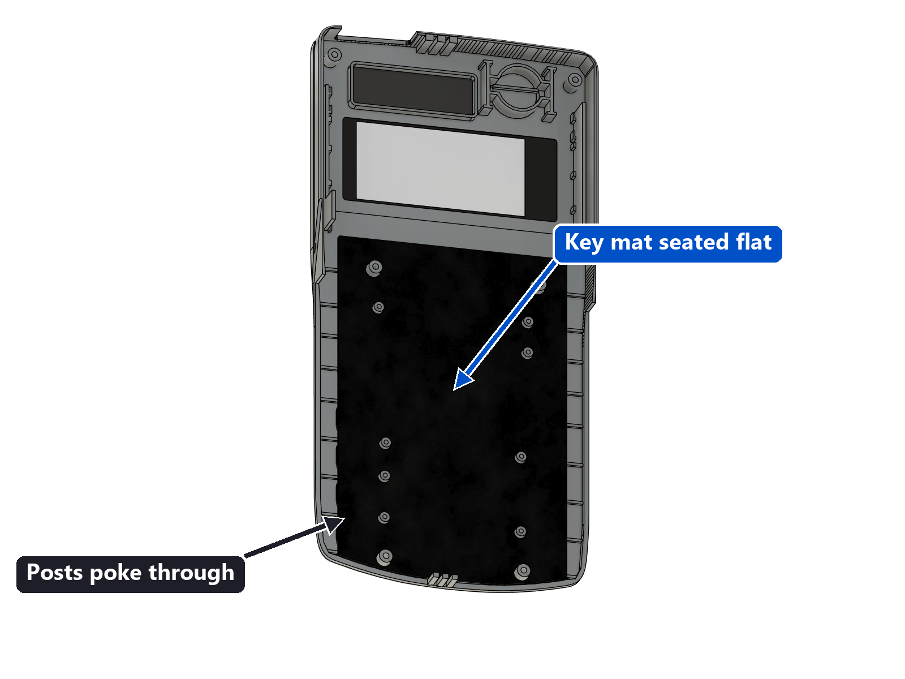
a mat that sits on a post instead of around it lifts the board there: that key and its neighbours stop working, and the board rocks.


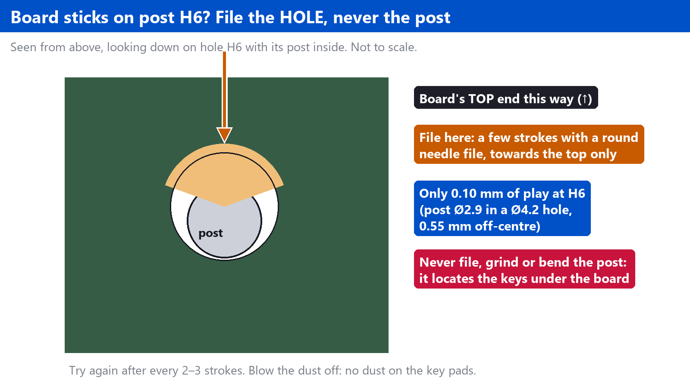
the posts set where the key pads sit over the domes. File a post and the keys go off-centre for good; a hole can be filed a little without harm.

Key test before gluing (cable power, no battery)
Glue the magnet
the cable snaps on and off hundreds of times. Without glue that pull goes into J3's legs and breaks them loose; with glue the shell takes it.
- Board flat, no rocking, screen centred.
keys_ok50.- Magnet flush, glue set, contact face clean.
- Pressing the board down hard when it binds: it bends round H6 and the keys under it fail.
- Gluing before the key test: if a key fails, the board can't come out easily.
- Glue on the gold pads of the magnet face: no charging, no USB.
the board sits flat, all 50 keys count, and the magnet is glued flush and set.
09Battery
The battery (Adafruit #1317, 150 mAh) lies flat on the back-cover floor, in the top-left corner as seen from the front, beside the board. Its long side (26 mm) runs left to right and the wire end faces right, towards the middle of the cover and J4. The wires stay below the board's level and the plug goes into J4. From now on the board is always powered.

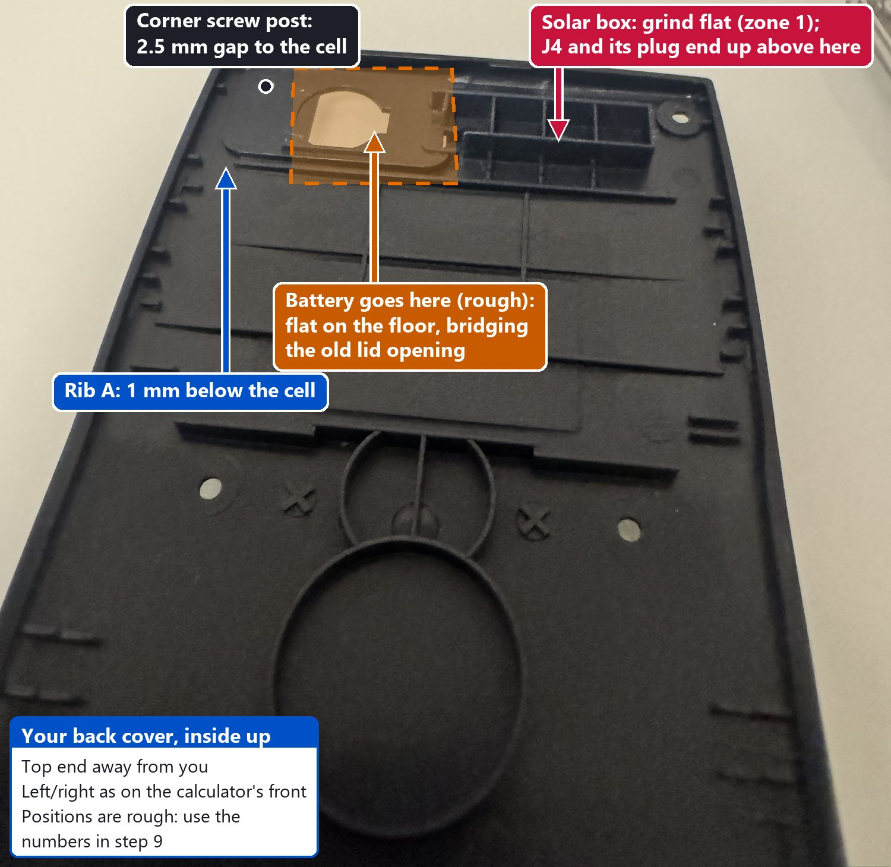

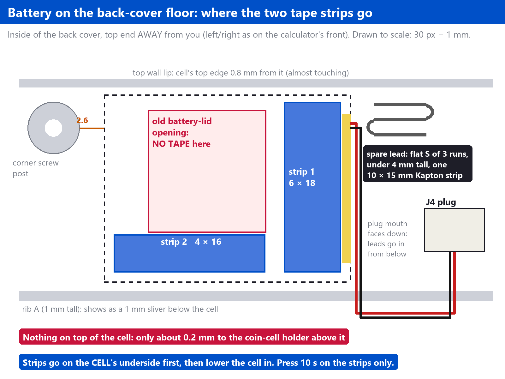

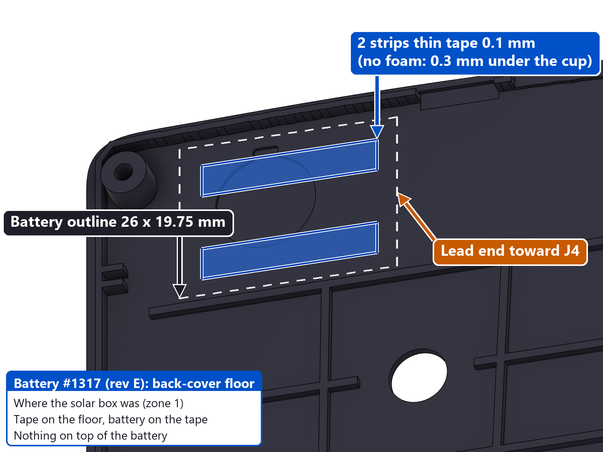
the cell lies over the old battery-lid opening. Tape on the lid would rip the cell off its wires the day someone opens the lid. Anything on top of the cell (foam, a second tape layer) stops the cover closing: the coin-cell holder above it leaves only about 0.2 mm.

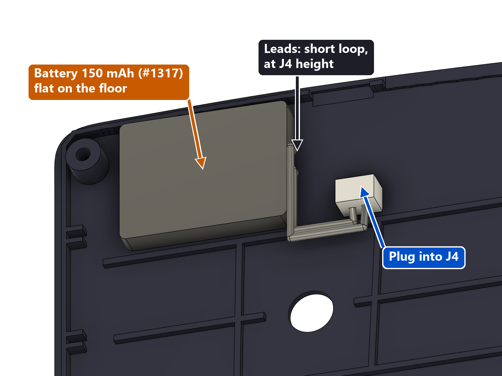

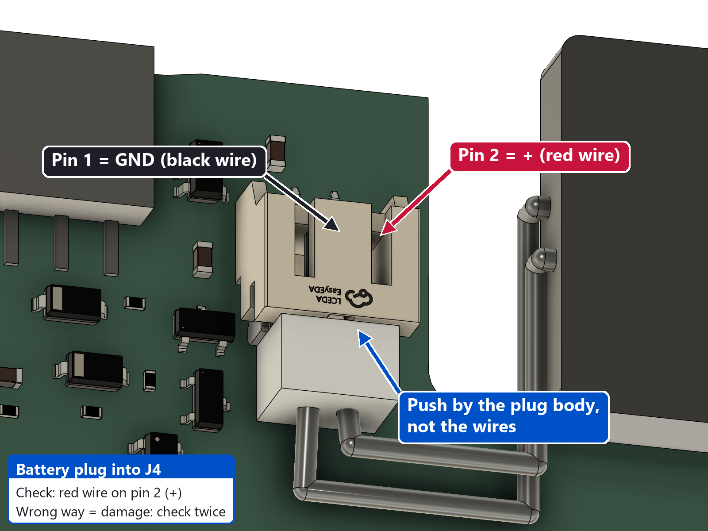
the board has no power switch: from this moment the ESP32 runs whenever it's awake. That's why both ribbons had to be in first. The plug only fits one way, but a cell with swapped crimps fits too: the meter is the only guard.

- Plug fully home in J4, red on "+".
- Cell flat, doesn't slide when you nudge it; nothing on top of it.
- Lead bundle under 4 mm, not over J4 or the camera ribbon.
- TP1, TP4, TP7 bare.
- Tape on the battery lid.
- Leaving the #1317's lead taped on top of the cell (4.9 mm tall: the cover won't close).
- Pulling the plug in or out by the wires.
- A lead loop standing up between the cell and J4.
the plug is home in J4, the battery is snug under the test-fitted cover, and TP1/TP4/TP7 are bare.
10Close up
The cover in four frames

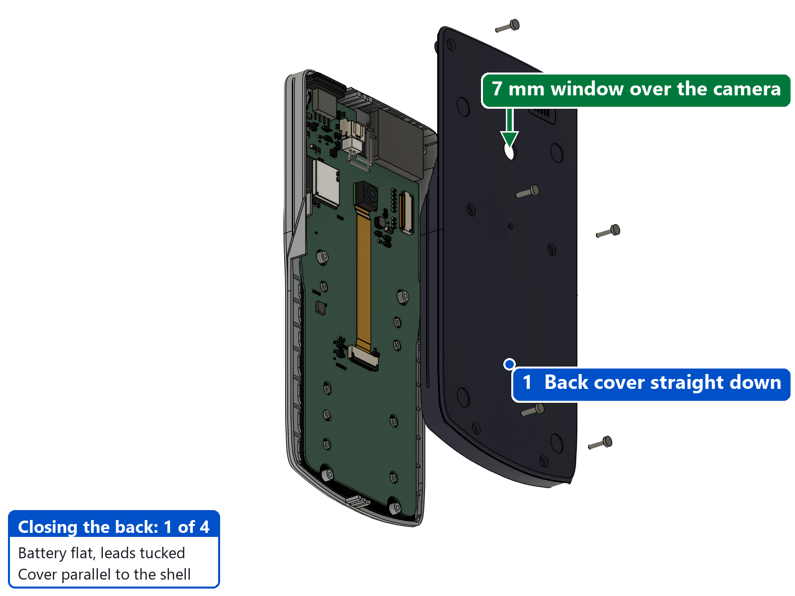

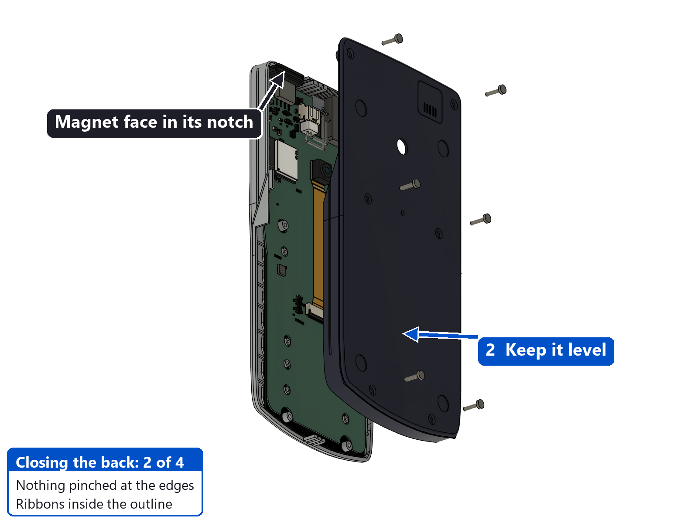

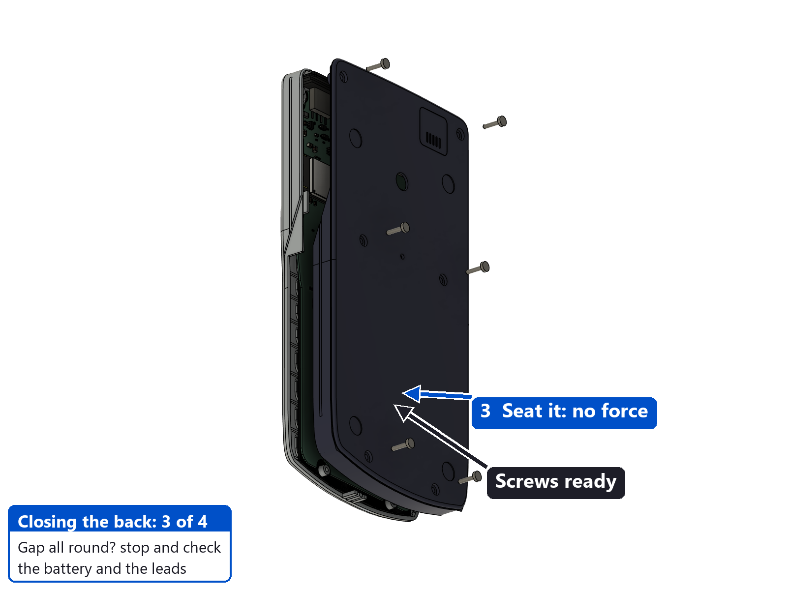


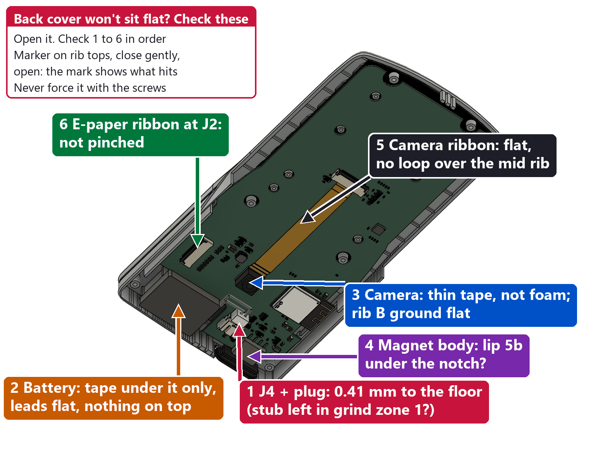
- Take the cover off again. Never pull it down with the screws: the board bends and keys fail.
- Find where it lifts: press the cover lightly at each corner; the corner that springs back is near the cause.
- Marker trick: colour the tops of the parts there (J4's plug, the camera, the magnet body) with a dry-erase marker, close gently, open: the mark that transferred to the cover shows what hits.
- Fix that one thing: grind the stub left in zone 1, swap foam for thin tape, re-lay a ribbon loop, notch the 5b lip, peel anything off the top of the battery.
- Try again: it must sit by itself.

every gap at the rim means something inside is being pressed: a ribbon, the camera or the battery. Screws hide it for a week, then a key or the screen fails.
- Cover flat with no screws in.
- 6 screws snug, none spinning (stripped).
- Camera lens visible in the middle of the window from outside.
- Forcing the cover with the screws.
- Over-tightening: the plastic thread strips and that screw never holds again.
- Lowering the cover at an angle: a ribbon or the battery lead gets caught at the rim.
the cover sits flat with no gap, all 6 screws are snug, and the lid and feet are on.
11Final test


Self-test
Camera preview
AI solve through the proxy
The hotspot, server address and token went in at power-up step 10 and are still in the board. (Not done yet? Do that step first: it also says how to put the server online and make the token.) Here you check the keypad route a customer uses, then a real solve.
Charging and sleep
the bench test proved the parts; this proves the assembly: no ribbon pulled loose on the way in, no key pressed by the shell, and the antenna still hears Wi-Fi through the case.
- Testing AI solve only with the cable in: the battery case (brownout) is the one that matters.
- Holding the calculator flat on the page: the camera can't focus closer than about 10 cm.
SELF-TEST PASS, an AI answer came back on battery, charging shows in status, and memory survived a night off.
QAFinal quality check (before you hand it to anyone)
One last walk round each calculator. Every line must be a yes. Any "no": open it (step 12, reopening safely) and fix that before it leaves the bench. Electrical results come from the First Power-Up Guide (bench) and step 11 (closed).
every line above is ticked for this calculator.
12Problems and reopening
| Problem | Likely cause | What to do |
|---|---|---|
| Back cover won't close, gap at the rim | Stub left on the solar box (J4 has 0.41 mm), camera on foam, magnet hits a lip (5b), pinched ribbon, foam or thick tape on the battery, lead taped on top of the battery | Open. Marker on the tall parts, close gently, open, look for marks (step 10 box). Grind the marked spot; use thinner tape |
| Board won't drop onto the posts | H6 (0.10 mm play) | File H6's hole towards the board's top. Never the post |
| Keys missing in the self-test | Dust on a dome or pad, mat folded, board not pressed down | Open, clean the dome and pad with a dry brush, re-lay the mat, screws snug |
| Screen blank or dead lines | E-paper ribbon pulled part-way out of J2 when the board went in | Unplug the battery first, then reseat J2 |
camera_ok false | Ribbon not seated, or reversed | Battery off, reseat J1; then try the 180° twist |
| Camera picture dark at one side | Hole off-centre from the lens, or camera tilted | Move the camera slightly (within its 1.7 mm) or open the hole carefully |
| No charging, no COM port | Magnet face sunk in, legs pulled out of J3, deep sleep | Press ON. Check the face is flush. Then the TP1 + TP7 rescue |
| Restarts during AI SOLVE | Battery voltage dips (brownout) | Lower kWifiMaxTxQuarterDbm to 34 in power.h |
| Sleep current about 330 µA / 0.3–1 mA | Keypad interrupt stuck / camera pins | Note the number and ask (firmware fix) |
| Rattle | Battery loose | Re-stick it to the floor with fresh 0.1 mm tape; never add foam on top |
| "Battery low: plug in the cable to use AI solve" | Cell under 3.6 V: camera and Wi-Fi stay off | Charge (AI is back above 3.7 V, or at once with the cable in). Maths keeps working |
| "Not set up yet: SETUP 6" | Server address or token missing | SHIFT MODE, 6, = and the phone form, or power-up guide step 10 |
UPDATING … % after switching off on the cable | An over-the-air update from your server | Leave the cable in until it restarts. UPDATE FAILED keeps the old firmware |
Reopening safely
Taking the board out againThe docs don't cover this. The magnet is glued in the shell and its legs sit sideways in J3, so lifting the board straight up would bend the legs. Soften or cut the glue first (hot glue is easier), lift the board and magnet out together, then pull the legs out of J3 suggestion.